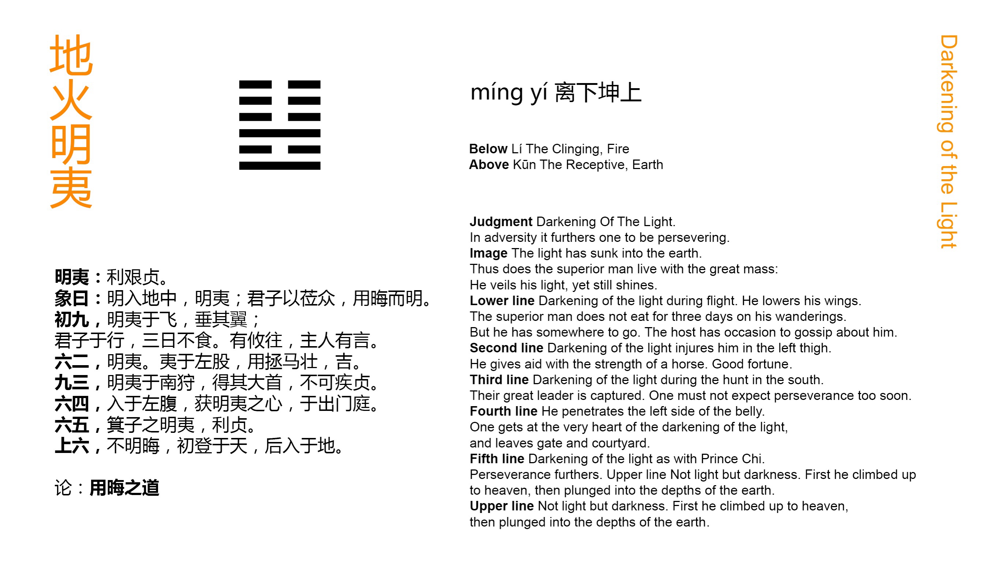

Chinese: 明夷 ䷣ míng yí

Míng Yí ䷣ indicates that (in the circumstances which it denotes) it will be advantageous to realise the difficulty (of the position), and maintain firm correctness.
1. The first NINE, undivided, shows its subject, (in the condition indicated by) Míng Yí ䷣, flying, but with drooping wings. When the superior man (is revolving) his going away, he may be for three days without eating. Wherever he goes, the people there may speak (derisively of him).
䷣ changing to ䷎
Matching Line 1 in Adjacent Hexagram: ䷢
2. The second SIX, divided, shows its subject, (in the condition indicated by) Míng Yí ䷣, wounded in the left thigh. He saves himself by the strength of a (swift) horse; and is fortunate.
䷣ changing to ䷊
Matching Line 2 in Adjacent Hexagram: ䷢
3. The third NINE, undivided, shows its subject, (in the condition indicated by) Míng Yí ䷣, hunting in the south, and taking the great chief (of the darkness). He should not be eager to make (all) correct (at once).
䷣ changing to ䷗
Matching Line 3 in Adjacent Hexagram: ䷢
4. The fourth six, divided, shows its subject (just) entered into the left side of the belly (of the dark land). (But) he is able to carry out the mind appropriate (in the condition indicated by) Míng Yí ䷣, quitting the gate and courtyard (of the lord of darkness).
䷣ changing to ䷶
Matching Line 4 in Adjacent Hexagram: ䷢
5. The fifth six, divided, shows how the count of Qì fulfilled the condition indicated by Míng Yí ䷣. It will be advantageous to be firm and correct.
䷣ changing to ䷾
Matching Line 5 in Adjacent Hexagram: ䷢
6. The sixth six, divided, shows the case where there is no light, but (only) obscurity. (Its subject) had at first ascended to (the top of) the sky; his future shall be to go into the earth.
䷣ changing to ䷕
Matching Line 6 in Adjacent Hexagram: ䷢
In this hexagram we have the representation of a good and intelligent minister or officer going forward in the service of his country, notwithstanding the occupancy of the throne by a weak and unsympathising sovereign. Hence comes its name of Míng Yí ䷣, or 'Intelligence Wounded,' that is, injured and repressed. The treatment of the subject shows how such an officer will conduct himself, and maintain his purpose. The symbolism of the figure is treated of in the same way in the first and second Appendixes. Appendix VI merely says that the advance set forth in 35 ䷢ is sure to meet with wounding, and hence Jìn ䷢ is followed by Míng Yí ䷣.
Line 1 is strong, and in its right place; -- its subject should be going forward. But the general signification of the hexagram supposes him to be wounded. The wound, however, being received at the very commencement of its action, is but slight. And hence conies the emblem of a bird hurt so as to be obliged to droop its wings. The subject then appears directly as 'the superior man.' He sees it to be his course to desist from the struggle for a time, and is so rapt in the thought that he can fast for three days and not think of it. When he does withdraw, opposition follows him; but it is implied that he holds on to his own good purpose.
Line 2 is weak, but also in its right place, and central; giving us the idea of an officer, obedient to duty and the right. His wound in the left thigh may impede his movements, but does not disable him. He finds means to save himself, and maintains his good purpose.
Line 3, strong and in a strong place, is the topmost line of the lower trigram ☲. It responds also to line 6, in which the idea of the sovereign, emblemed by the upper trigram, is concentrated. The lower trigram is the emblem of light or brightness, the idea of which again is expressed by the south, to which we turn when we look at the sun in its meridian height. Hence the subject of the p. 137 line becomes a hunter pursuing his game, and successfully. The good officer will be successful in his struggle; but let him not be over eager to put all things right at once.
Line 4 is weak, but in its right place. Zhū Xī says he does not understand the symbolism, as given in the Text. The translation indicates the view of it commonly accepted. The subject of the line evidently escapes from his position of danger with little damage.
Line 5 should be the place of the ruler or sovereign in the hexagram; but 6 is assigned as that place in Míng Yí ䷣. The officer occupying 5, the centre of the upper trigram ☷, and near to the sovereign, has his ideal in the count of Qì, whose action appears in the Zhōu Shū. He is a historical personage.
Line 6 sets forth the fate of the ruler, who opposes himself to the officer who would do him good and intelligent service. Instead of becoming as the sun, enlightening all from the height of the sky, he is as the sun hidden below the earth. I can well believe that the writer had the last king of Shang in his mind.